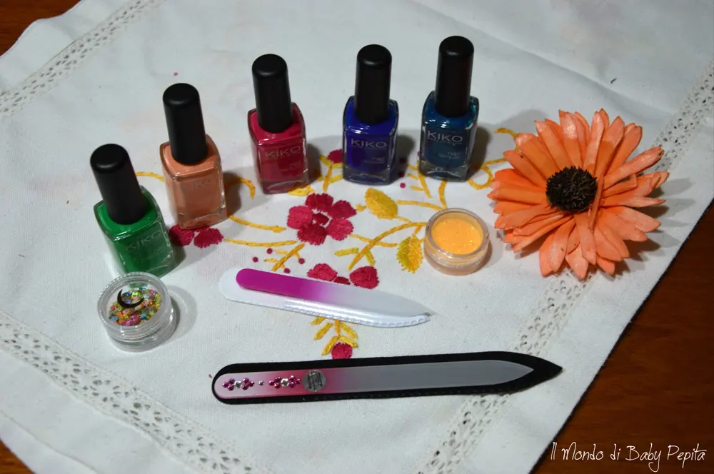
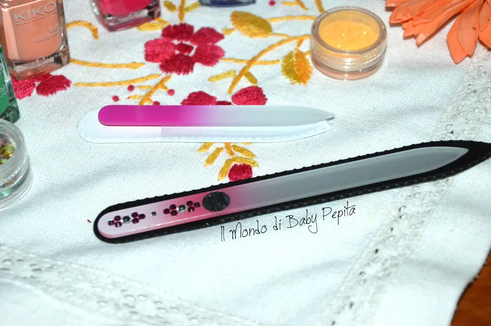
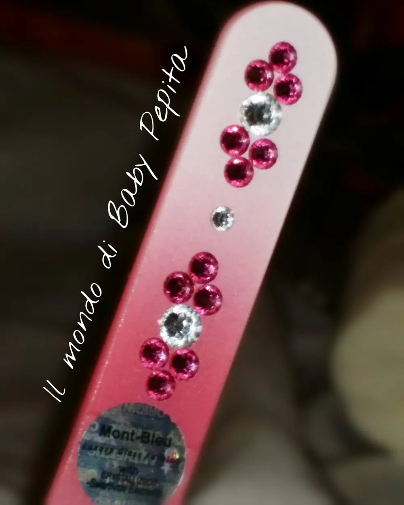
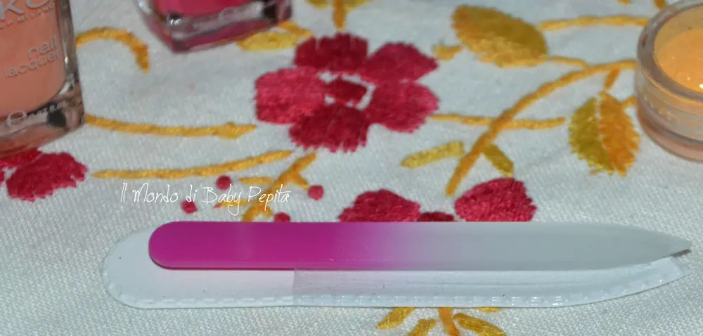
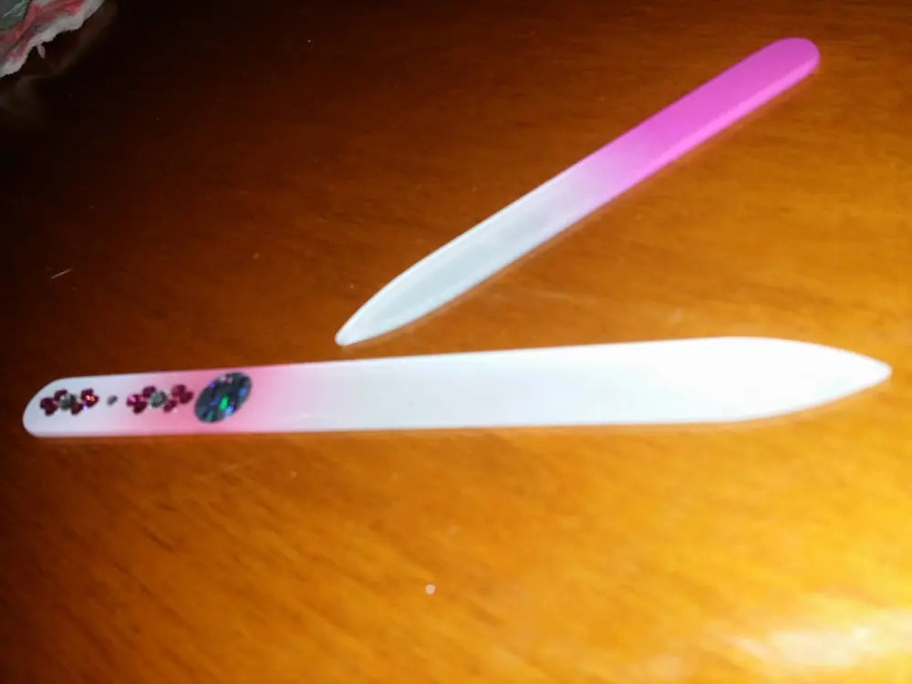

Lime in vetro Czech glass nail

Tutte noi donne ormai siamo sempre alla ricerca di accessori e cose carine ma anche sì utili e pratiche.
Ora chi ricostruite, chi naturali tutte abbiamo le unghie lunghe e in ogni borsa che si rispetti non mai una lima.Personalmente finora ho sempre utilizzate prima quelle in acciaio per la durata, poi quelle in cartone per la grammatura, ma oltre a non essere per niente igieniche poiché non sono lavabili, si rompono anche facilmente.

Ed ecco che oggi vi parlo invece di una lima, anzi due; che oltre alla durata e all'igiene è anche molto ma molto bella.
Vi parlo di Mont Bleu, entrando in questo sito potrete vedere la vasta gamma di lime in vetro con il disegn che più vi rappresenta.

E' un'idea che arriva direttamente da Praga tutte decorate a mano.
Queste lime in vetro sono, come già vi accennavo, facilmente lavabili .
Usandole ho notato subito che non aggrediscono l'unghia grazie alla superficie levigante prevenendo inoltre lo spezzarsi dell'unghia.

La mia esperienza con questa lima è stata davvero ottima in quanto, ormai avendo sempre a che fare con lime, ho potuto constatare che l'unghia, una volta limata, resta liscia e non granulosa come le normali lime, in pratica lavora in modo dolce come se andasse ad accarezzare le nostre unghie non essendo invasive ma lavorando in modo non violento. Infatti non fa nemmeno quel solito rumore dello sfregare l'unghia mentre le limiamo dando un leggero fastidio ai denti ahahahah come fosse carta vetrata.

La cosa che poi, vabbè, salta subito all'occhio è la particolare bellezza di queste lime impreziosite di swarovski le rendono davvero eleganti e completamente in vetro temperato.
Un'ottima idea regalo per le amanti della manicure e nail art.
Ma fantastica anche da borsetta.
Infatti non so voi, ma a me capita spesso che qualche unghia si spezzi proprio nei momenti meno opportuni tipo dal medico, o in giro o magari anche in qualche week end fuori. Tante volte mi sono chiesta "ma non è brutto tirar fuori una lima magari quelle grandi nere anche tanto usata"?. . E proprio in quei casi io ci troverei bene questo tipo di lima, essere elegante anche nei momenti fuori casi in casi come un incidente di percorso ahahah
Beh ricapitolando io amo queste lime, anche se non ho ricevuto entrambe con gli swarovski, infatti la più piccola è senza gioielli e la trovo ottima per i beauty case.

Vi consiglio di acquistare questi piccoli gioielli, si possono anche personalizzare con loghi personali o un disegno che verrà dipinto a mano. .

Esperti anche in altri accessori come pinzette, forbici, spazzole per capelli,specchietti compatti e tanto altro. .
Il prezzo della piccola se non erro è di 5,00 € (nella categoria dello store Classic nail)
Il prezzo della grande con swarovski se non erro è di 14,00 €(nella categoria Luxury edition)
Visitate la loro pagina su facebook: https://www.facebook.com/MontBleu/?fref=ts
Sito web: http://www.czech-glass-nail-files.com/E-schop per l'acquisto: https://www.design-glassware.com/10-nail-files